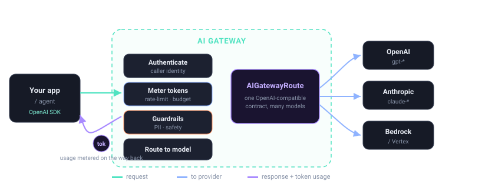

6.2 — Debugging AI requests at the gateway
Bottom line
When an AI request fails or misbehaves, the answer is almost never in your app — it's at the gateway, the one place that sees the request as transformed and the provider's response. By the end of this session you can reproduce a blocked request and use the gateway's debug and telemetry signals to identify exactly which policy (guardrail, limit, or auth) rejected it, at which stage, and why — instead of guessing from a generic error the client received.
In plain words
When something goes wrong, the robot didn't break — somewhere along the way the friendly helper at the door said "no" to your question. So you open the helper's little diary and read it line by line: it wrote down every step it took and which one stopped you, and why — maybe your word jar was empty, maybe the question wasn't allowed. Reading the helper's diary to find the exact step that said "no" is debugging.
Why this exists
Once governance lives at the edge, so does the failure. A 429, a 403, a redacted response, a wrong model — none of those happened in your service; they happened in a policy the gateway ran on a request your app no longer fully controls. The call left your process, so your debugger and your request logs stop at the point where you handed it off. The gateway picks up exactly there.
This is the operational flip side of session 6.1. There you wired metrics and traces to watch healthy traffic; here you use the same signals — plus the gateway's request/response view — to diagnose broken traffic. The skill is knowing what the gateway saw: the body it rewrote, the headers it injected, the policy that fired, and the upstream's actual reply.
From Apigee
This is the Apigee Trace/Debug tool, for AI. You already know the move: capture a session, then step the request flow policy by policy and watch each one's input, output, and verdict to find where it went wrong — a Quota that tripped, a VerifyAPIKey that failed, a JavaScript that mangled the payload. Same instinct here: step the AI request through routing → guardrails → rate/budget limits → auth → provider call, and read which step changed or rejected it. The flow has new stations (token limits, prompt guardrails, model entitlement), but the debugging discipline — find the step that fired — is identical.
From Java microservices
Think of how you debug a downstream call today: a breakpoint in the client, the request/response logged by an interceptor, the upstream's status and body inspected. For a gateway-fronted LLM call, the gateway is where you now set that breakpoint — it holds the transformed request and the provider's raw response that your app never sees. Your service-side logs tell you "the gateway returned 403"; only the gateway's debug view tells you whether a guardrail blocked the prompt or an auth policy rejected the caller. You move from "log inside my service" to "read the edge that spoke for my service."
Where the analogy breaks
Apigee Trace shows a single request marching through a flow you authored. An AI failure may not be a single request at all — an agent run can fail on its third tool call or its second model hop, so the "request that broke" is one span buried in a session. And the failure can be semantic, not a status code: a guardrail rewrites the response, or the model returns a confidently wrong answer the gateway happily passed. There's no flow step labelled "the model was wrong." You debug the trace of the run (6.1), not just the one HTTP exchange — and some failures live above the gateway entirely.
The concept
Reuse the request-path map from session 1.1 — but now read it as a fault tree. Each station is both where a policy acts and where it can reject, and the gateway records the verdict at each one:

Read left to right, each station has its own characteristic rejection, and knowing the order tells you what to rule out first. Auth rejects before any model work happens — a bad or unentitled caller never reaches a provider. Token/budget limits reject a caller who is valid but over their allotment — the request was well-formed, the wallet was empty. A guardrail can reject on the way in (a prompt it won't allow) or rewrite on the way out (redaction, a blocked completion) — so a guardrail failure can present as either a 4xx or a suspiciously altered 200. Routing rejects when no rule matches the requested model. Only past all of those does the provider call happen, and a failure there is the upstream's, forwarded through. Walking the stations in order turns "it broke" into "it broke here."
The single most important distinction this view enforces: gateway-rejected vs. provider-rejected. A 4xx the gateway raised because your policy said no looks, to the client, almost identical to a 4xx the upstream provider raised. They demand opposite fixes — one is your config, one is the model API. The gateway's debug signals (the response code's source, the policy/decision metadata, the OpenInference span attributes) tell them apart before you waste an hour debugging the wrong layer.
Watch out
A 4xx from the gateway and a 4xx from the provider look the same to the client. Before you debug, establish which layer rejected the call: a gateway policy (your guardrail, your budget, your auth) or the upstream provider (bad model name, provider quota, malformed request the gateway forwarded). Reach for provider-side fixes on a gateway-rejected request and you'll change config that was never the cause.
Hands-on lab
Lab — reproduce a blocked request and find what fired
Prereqs: the gateway from 1.5 with a token/budget limit from Part 3 and a guardrail from Part 4 active, telemetry enabled from 6.1, and kubectl. Export $NAMESPACE, $GATEWAY_HOST, and $GATEWAY_KEY.
1. Deliberately trip a policy. Send a request you know should be rejected — here, one that blows past a token budget — and capture the full response including headers:
curl -s -D - -o /tmp/body.json -w "\nHTTP %{http_code}\n" \
"https://$GATEWAY_HOST/v1/chat/completions" \
-H "authorization: Bearer $GATEWAY_KEY" \
-H "x-user-id: alice" -H "content-type: application/json" \
-d '{"model":"gpt-4o-mini","max_tokens":4096,
"messages":[{"role":"user","content":"Write the longest possible essay."}]}'
2. Read which policy fired, and at which stage. The response headers and body carry the gateway's verdict; the metadata names the decision. Distinguish gateway from provider first:
# the status line + gateway decision headers (rate-limit, guardrail, auth)
grep -iE "x-ai-eg|x-ratelimit|x-envoy|retry-after|^HTTP" /tmp/body.json /dev/stdin < /dev/null
# the error body — gateway-shaped error vs. forwarded provider error
jq '{message: .error.message, type: .error.type, code: .error.code}' /tmp/body.json
A 429 with x-ratelimit-* / retry-after headers and a gateway-shaped error is gateway-rejected (your token budget from Part 3). A 4xx whose body is the provider's error schema is provider-rejected and forwarded — a different fix entirely.
Watch out
Don't debug from the client's status code alone. The same 429 can mean "your gateway budget tripped" or "the provider rate-limited the gateway's upstream key." Confirm the source via the decision headers and the error body's shape before touching any config.
3. Confirm against the trace. Pull the OpenInference trace for this request (6.1) and read the span where the verdict was stamped — the rejecting stage and policy name appear as span attributes, so a misbehaving agent run shows you the exact failing step, not just the final code:
curl -s "http://tempo.${NAMESPACE}.svc.cluster.local:3100/api/search?tags=session.id=demo-run-1" \
| jq '.traces[0].spanSet.spans[] | select(.attributes["ai.gateway.decision"]) |
{stage: .name, decision: .attributes["ai.gateway.decision"], policy: .attributes["ai.gateway.policy"]}'
4. Now trip a provider failure and watch the signal change. Send a request the gateway happily accepts but the upstream rejects — a model name no provider serves — and compare:
curl -s -D - -o /tmp/prov.json -w "\nHTTP %{http_code}\n" \
"https://$GATEWAY_HOST/v1/chat/completions" \
-H "authorization: Bearer $GATEWAY_KEY" -H "content-type: application/json" \
-d '{"model":"gpt-nonexistent-999","messages":[{"role":"user","content":"hi"}]}'
# the error body now carries the PROVIDER's schema, with no gateway decision header
jq '{message: .error.message, type: .error.type, code: .error.code}' /tmp/prov.json
The status may again be a 4xx, but there is no x-ratelimit-*/decision header and the body is the provider's error shape — the unmistakable signature of a provider-rejected call. Same client symptom, opposite cause, opposite fix.
What success looks like: for your deliberately-blocked request you can state, with evidence from headers, body, and trace, which policy rejected it (e.g. the Part 3 token budget), at which stage (the rate-limit station), and — by contrast with step 4 — that it was gateway-rejected, not provider-rejected. That's the exact triage you'd otherwise have spent an hour guessing at from a bare status code.
Verify it
Common failure modes
- Debugging the wrong layer. Treating a gateway-rejected
4xxas a provider problem (or vice versa); always establish the source from decision headers and error-body shape first. - Trusting the client's error text. The client sees a sanitised status; the cause — which policy, which stage — lives in the gateway's headers, decision metadata, and span attributes, not in the app log.
- Debugging a single request when it's an agent run. The failure may be the third tool call or second model hop; read the trace, not just the last HTTP exchange.
- No reproduction. Diagnosing from a one-off production error without re-tripping the policy on demand — you can't confirm the fix you can't reproduce.
- Assuming
200means correct. A guardrail may rewrite a response, or the model may be confidently wrong; a clean status is not a clean answer.
Stretch goal
Build a tiny triage runbook: trip each policy class in turn — auth failure, token-budget 429, guardrail block, and a genuine provider error (e.g. an invalid model name forwarded upstream) — and record the distinguishing signal for each (status, decisive header, body shape, span attribute). You now have a one-page "which layer rejected this" lookup that turns the next on-call AI incident from guesswork into a two-minute classification.
Recap & next
You can now reproduce a blocked AI request and use the gateway's debug and telemetry signals to pinpoint which policy fired, at which stage, and why — and, crucially, tell a gateway-rejected failure from a provider-rejected one before you start fixing. The edge is your breakpoint, the trace is your stack, and the request path is your fault tree.
Next — 6.3: you've observed and debugged a running gateway; now you'll operate it as config-as-code — the Gateway API and AI CRDs in git, the aigw CLI for local runs, and the same manifests promoted unchanged across clusters via GitOps.